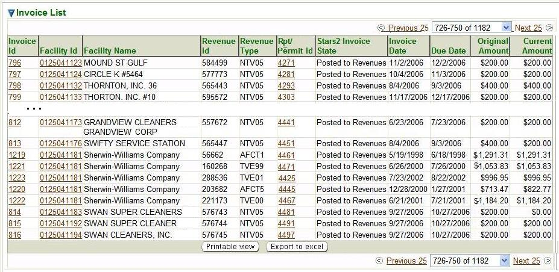

Previous Topic
Next Topic
| Invoices |
Previous Topic |
Next Topic |
Invoice Search is the initial page you see when you select the Invoices tab. However, you may also get to the Invoice Search page from the second-level menu on any page within the Invoices tab no matter how you reached that page. This is a standard search page, as described in Common Search Paradigm. The Search Criteria and Result List for this search are described below.
This topic contains the following sections:
 provided next to the field. This field filters on the Revenues Effective Date
(as entered when the invoice is Posted to Revenues.)
It is necessary only when a value is selected for the Revenue State
field.
provided next to the field. This field filters on the Revenues Effective Date
(as entered when the invoice is Posted to Revenues.)
It is necessary only when a value is selected for the Revenue State
field.
By default, the search criteria are specified to select all invoices. You may of course modify these values before you submit your search. The more criteria you are able to specify, the more precise your search will be. Broad searches can retrieve many records that can make it difficult to home in on the information you are really looking for. If, for example, you submit a search with only the default criteria set, you will get a record for every invoice available for every facility in the entire State of Ohio which has a relationship with the Ohio EPA Division of Air Pollution Control. There are more than 20,000 of them. (The Revenues system will not return more records than that. If you submit a search that has more than 20,000 matches in Revenues, you will get no records back and the you will see an error message!) So, you should try to narrow your search by specifying as many criteria as you can to identify the invoice(s) you are really looking for.
After you complete the criteria for the search you want, and click on
 ,
the system searches all of the records for all the invoices stored in its
database, selects
the ones that meet ALL of the criteria you have specified, and returns
summary information
about those invoices in a datagrid. The datagrid below is the result of a search submitted
with search criteria specified to select all invoices that are Posted to Revenues,
regardless of any other information regarding the invoice.
,
the system searches all of the records for all the invoices stored in its
database, selects
the ones that meet ALL of the criteria you have specified, and returns
summary information
about those invoices in a datagrid. The datagrid below is the result of a search submitted
with search criteria specified to select all invoices that are Posted to Revenues,
regardless of any other information regarding the invoice.

Invoice Search Results Datagrid
The summary data returned includes columns providing Invoice Id, Facility Id, Facility Name, Revenue Id, Revenue Type, Report/Permit Id, Star2 Invoice State, Invoice Date, Due Date, Original Amount and Current Amount. for all the invoices that match your search criteria. The following summary data is further explained:
Note that the data in the Invoice Id, Facility Id, and Report/Permit Id columns in the datagrid are hyperlinks. If you click the Invoice Id, Facility Id, or Report/Permit Id link, the system will take you to the Invoice Detail, Facility Detail, Emissions Inventory or Permit Detail page for the Invoice Id, Facility Id or Report/Permit Id that the link you selected references.
This datagrid supports all the common functionality for datagrids as described in
Common User Interface Elements - Datagrids
Back to Top